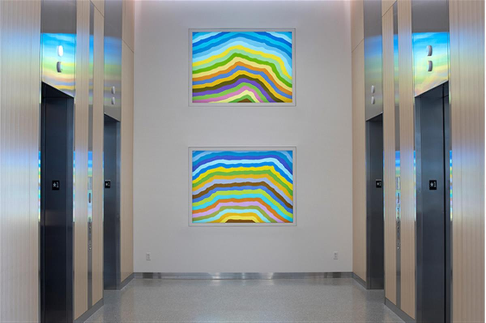
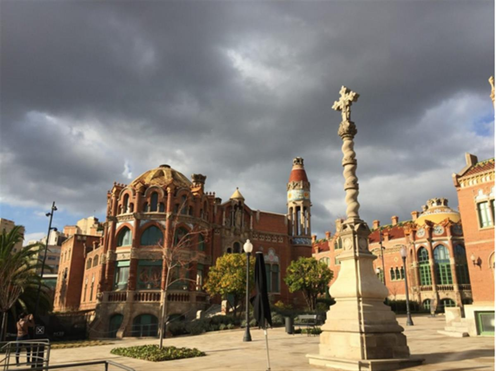
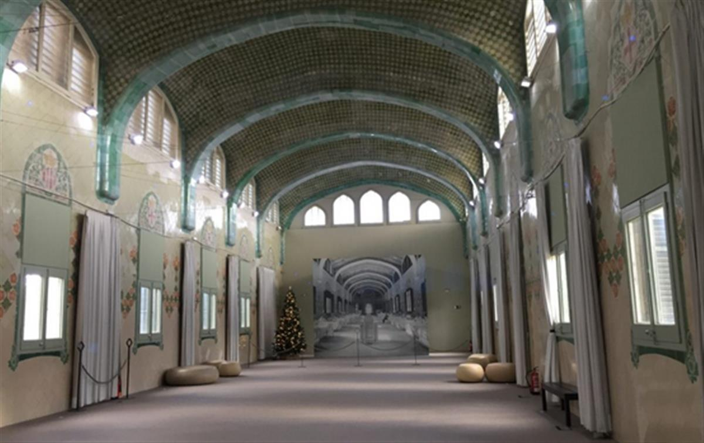
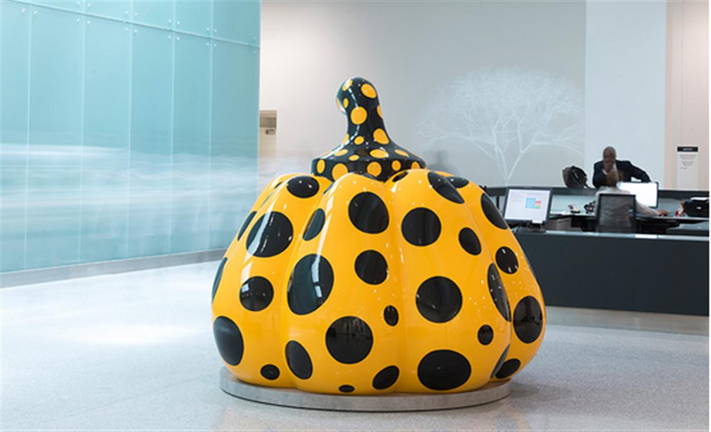
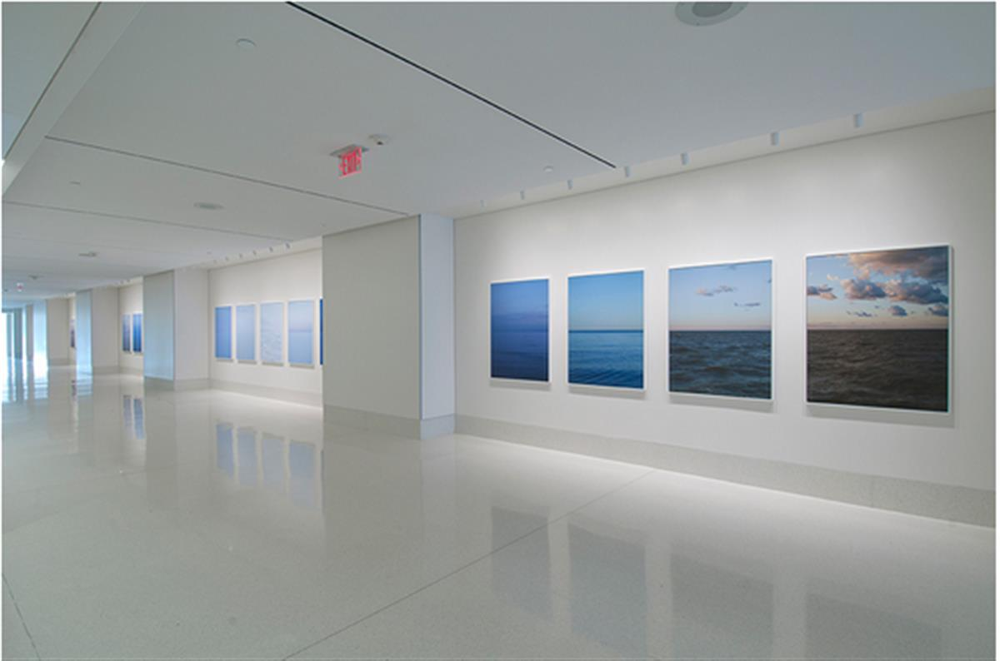
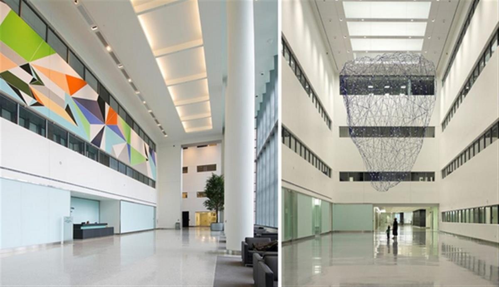
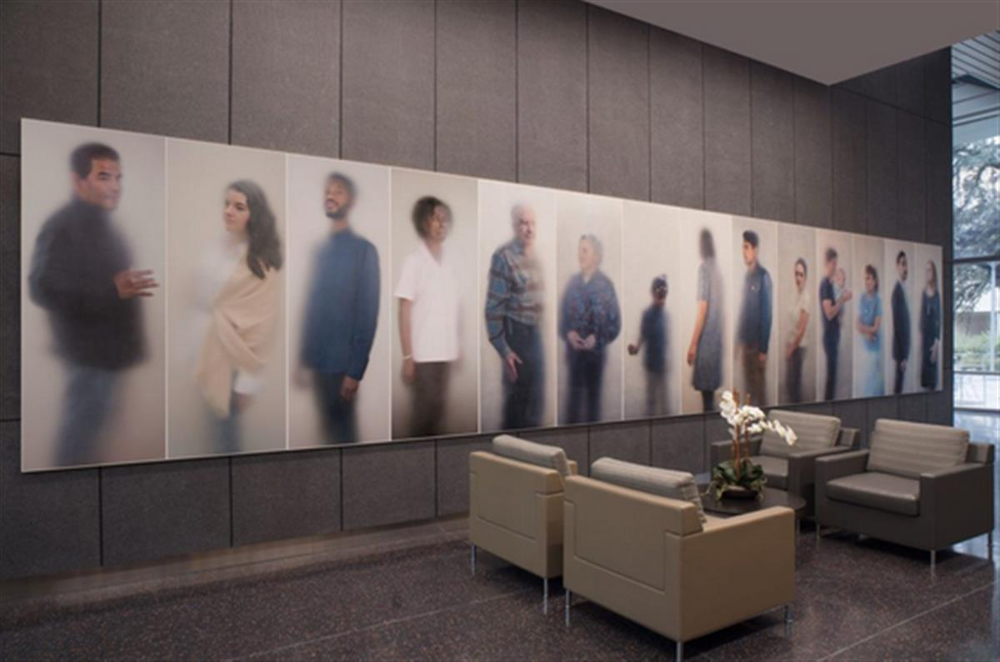
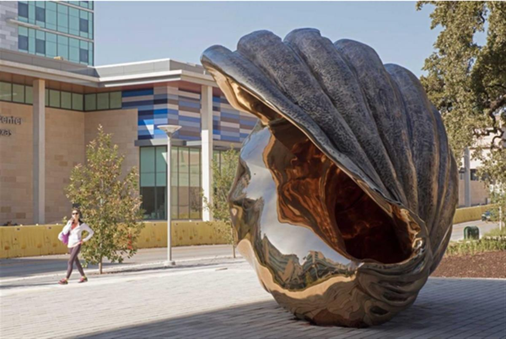

Jennifer Steinkamp, Mike Kelley 1 (2007) at Cleveland Clinic. Courtesy artist and Lehmann Maupin Photo: Steve Travarca.
Jennifer Steinkamp, Mike Kelley 1 (2007) at Cleveland Clinic. Courtesy artist and Lehmann Maupin Photo: Steve Travarca.
Clinics are increasingly making art a serious part of patient care.
Menachem Wecker, July 29, 2019
A patient was so bored by his hospital room’s décor that he told a nurse to save the next patient time by informing him or her that 391 fleurs-de-lis adorned the wall, according to a a 1914 journal article about how the modern sanitary hospital was characterized by bare walls, monotony, and a “dull and dreary aspect.”
More than a century later, many still associate the hospital aesthetic with empty, white hallways smelling of disinfectant. Sometimes clichéd, pastel-colored landscapes hang sparsely. Are designers hoping to bore germs to death?
But today, as scholars increasingly view health holistically, new research has begun to take seriously the role that art can play in the healing process. A 2017 study from Denmark found that hanging paintings, particularly abstract ones, in a hospital waiting room correlated with patient satisfaction. A British paper from 2007 demonstrated art’s “positive effects not only on patient well being but also on health outcome such as length of stay in hospital and pain tolerance.” And last year, the Montreal Museum of Fine Arts announced a collaboration with an area hospital to allow doctors to prescribe museum visits to patients.
The view that art can have beneficial effects on patient recovery is generally accepted nowadays, said Michael Mullins, co-author of a recent study on hospital art in the International Journal of Qualitative Studies in Health and Well-being and a professor at Copenhagen’s University of Aalborg. “It is also documented that art can reduce the experience of pain through distracting the patient’s attention.”

Spencer Finch, Going-to-the-Sun Mountain (2017) at Cleveland Clinic. Courtesy of James Cohan Gallery. Photo: Steve Travarca.
Scholars remain divided on which art is most beneficial—or detrimental—to patients. Some researchers dismiss abstract art as unsuitable for hospital use, due to “the perceived ambiguity of meaning in abstract art, which is maintained as being too open-ended for patients to interpret, as they are often experiencing states of unfamiliarity, vulnerability, stress, unpredictability, and uneasiness,” Mullins said. He and his colleagues think that other factors matter more than style, including size and placement, color and contrast (patients prefer bright colors), shape, and movement (to which patients respond well).
Hospitals aren’t places to be too edgy, said Jennifer Collins-Mancour, visual arts coordinator of arts and health at Duke University Hospital. “Other than staff, most people do not choose to come to a hospital. They often find themselves here without choice, unlike a museum or gallery,” she said. “At a time when patients and their loved ones feel the most vulnerable, or out of control, this is not the place to challenge them.” A hospital’s role isn’t to upset or offend a patient, she said. So picturesque landscapes, from this perspective, are appropriate, at least in patient rooms.
The interest in artfully-decorated healing spaces dates back at least to medieval times, when church-run hospitals doubled as repositories of some of the era’s most important art. Where medieval hospital art often appealed to saints for healing and were intended to inspire prayer, contemporary hospital décor aims to promote a more secular kind of healing. But current decorating practices share a good deal with historical precedents.
We toured hospitals around the world to look at some of the creative ways that hospitals today are integrating art into healing.

The Early European Evolution
Even on an overcast December day, Barcelona’s Gothic-revival Hospital de Sant Pau rivals anything Antoni Gaudí designed. Navigating the elaborately-detailed UNESCO World Heritage Site, designed by Lluís Domènech i Montaner, was the aesthetic version of an ice cream-induced brain freeze. Some 600 miles southeast of the former hospital, Seville’s Hospital de la Caridad, an active hospital dated to the late 17th century, also overflows with artistic masterpieces. Chief among them are a series of six Bartolomé Esteban Murillo paintings celebrating the Caridad (charity) brotherhood.
These beautifully-decorated former and current Spanish medical buildings are among a group that stands in sharp contrast to the kinds of visual imagery typically associated with the modern hospital.
“Early European hospitals were considered special sacred spaces, like churches,” said Guenter Risse, author of Mending Bodies, Saving Souls: A History of Hospitals. “Regular rest and food, mindfulness, and penance were key objectives.”
“The sanitary principle advanced in the 19th century after hospitals came to be identified as carriers of diseases—the so-called ‘hospitalism’—requiring better ventilation and chemical cleansing,” Risse said.

St. Paul’s in Barcelona. Photo: Menachem Wecker.
Independent scholar Jeanne Kisacky, author of Rise of the Modern Hospital: An Architectural History of Health and Healing, 1870-1940, added that Florence Nightingale’s influence led to large, open pavilion wards with 20 to 30 beds in two long rows and plentiful, large windows.
“The ideal was for each pavilion to be a separate building, with no corridor connection between them and the other parts of the hospital, although many hospitals in colder climates did enclose the connections,” Kisacky said, noting that exposure to outside air aimed to prevent airborne infection. “In the pavilion wards, not only was there no art but no projections, no cracks, nor corners (they were rounded) to avoid anything that would cause the air to stagnate, harbor filth, or be hard to clean.”
The walls were whitewashed regularly, according to Kisacky. “White was seen as a pure color, and as showing the dirt, so the whiteness became a simple and direct visual means of indicating the cleanliness of the institution,” she said. By the early 20th century, there was some easing of the whiteness of hospitals, and paying patients could recuperate in decorated rooms. “I have seen pictures that include hanging pictures in some late 19th-century large pavilion wards, but they were the exceptions,” Kisacky said.

Taking Risks in Cleveland
The Cleveland Clinic, one of the nation’s largest and most reputable hospitals, has had an art tradition since its inception in the 1920s. Its collection now numbers about 6,800 works, not including its 15,000 art posters and it established an in-house art program in 2006. Two years later, it formed the Arts and Medicine Institute.
“We set out to try and change the paradigm of what it’s like to be in a healthcare setting—that in some way, it might be inviting and enriching when you come to the hospital for whatever reason, whether you’re working there, a visitor, or a patient,” says executive director and curator Joanne Cohen. “We think that fine art is good medicine. If it’s high-quality, it’s going to hopefully withstand the test of time and afford people an opportunity to see things and experience things they might not otherwise get to do. Any chance to do that is usually expansive and will lift spirits and affirm lives, and hopefully it comforts,” she said.
When I toured the clinic, its on-view offerings, spread over 38 million square feet, included works by Derrick Adams, Loris Cecchini, Spencer Finch, Anish Kapoor, Yayoi Kusama, Sol LeWitt, Iñigo Manglano-Ovalle, Sarah Morris, Vik Muniz, Peter Newman, Trevor Paglen, Jaume Plensa, and Eva Rothschild. The collection “isn’t about just pretty landscapes,” which can take on a “wallpaper effect,” said Cohen.
Instead, what she calls the clinic’s “patient-centered curatorial practice” involves risk taking. “That’s part of 21st-century healthcare; we try to be innovative,” she said. “We look at artists who deal with the human condition. Artists who explore notions of collaboration and innovation which are cornerstones of the Cleveland Clinic.”

Installation view of Catherine Opie’s Somewhere in the Middle (2010/11). ©Catherine Opie, courtesy Regen Projects. Photo: Neil Lantzy.
With an eye toward its patients and staff who hail from more than 100 countries, the collection also centers on artists who address the globalized world, diversity, pop culture, “and the times in which we live, as that is also germane to our viewers, who might not necessarily be expecting an art experience when they enter the hospital setting,” Cohen added.
To further connect with viewers, the team has focused on collecting artists with ties to the area (about 18 percent of the more than 1,000 artists), and works by artists who identify as women, which account for about 40 percent of the clinic’s holdings. Cohen and colleagues install and uninstall works in public spaces, as thousands of people walk by, which yields different sorts of reactions than galleries and museums might receive.

L: Sarah Morris, Three Swans (2008). Courtesy the artist/Petzel Gallery. Photo: Thom Sivo Photography. R: Inigo Manglano-Ovalle’s BlueBerg (r11i01) (2017). Photo: Benjamin Benschneider.
Some respond by saying that their kid could make the art, while others are so inspired that they contact the artists to thank them. That’s what one woman did after seeing 22 photos by Catherine Opie. She Googled the artist, emailed her, and told her about how spending time with the works helped her get through a difficult time. The artist sent a smaller copy of the woman’s favorite photo to her, Cohen said.
Those stories help provide ammunition for curators at hospitals who want to push the boundaries and to move away from legions of saccharine landscapes. “I’m all for beautiful landscape if it’s well done and it’s mixed in with other things,” Cohen says. “The strategy of the clinic is that if it is an eclectic collection people will notice it more. The eclectic nature of the collection is what gives it strength.”

Seeking Empathy Through Art in Texas
At the University of Texas at Austin, the public art program, called Landmarks, installs art in buildings and other campus spaces. Andrée Bober, the program’s founder and director, hadn’t previously worked at the intersection of medicine and art before commissioning artist Ann Hamilton to create O N E E V E R Y O N E (2017) for installation in the university’s Dell Medical School and other health facilities on campus.
Hamilton photographed 530 people with connections to the university’s healthcare space—either patients or healthcare providers—through a frosty membrane, which brings the parts of their bodies touching the plastic into sharp focus, while everything else fades away. The results often approximate imagery with shallow depth of field, although they aren’t achieved through a camera setting. Standing in front of them, the works looked ethereal to me, as if portraying angelic versions of each person or like the sitters were in the process of teleporting to a new place in a Star Trek-style transporter.
“Ann’s work, in a more intuitive way, explores how touch is the basis for all healing and all caring,” Bober said. He recalled a conversation he had with S. Claiborne “Clay” Johnston, the dean of the medical school, about brainwave research that showed that looking at art activates the same parts of the brain as does the sense of touch.
The Dell Medical School curriculum includes “studying art to foster empathy,” and its Design Institute for Health has dispensed with the need for waiting rooms, instead assigning each patient a room, to which the various doctors report. Against that backdrop, Hamilton’s commission involved forming relationships with people in the university’s facilities, including interacting with patients who are suffering and vulnerable.
When one of the patients whom Hamilton photographed died, the portrait became a gathering place for family, said Bober. “It became a kind of memorial,” she said. “And they loved it, because a capturing of their spirit.”
Just as Cohen has found at the Cleveland Clinic, Bober said one can’t always anticipate how people in hospitals will respond to artwork on the walls. “Even things that seem innocuous could be triggers for them,” Bober said. A red Mark Rothko painting in a hospital, for example, could evoke blood to some patients and their families.

Installation view of Marc Quinn’s Spiral of the Galaxy (2013). University of Texas at Austin.Photo: Paul Bardagiy, courtesy of the artist and Landmarks.
Patient comments, at least on Twitter, at other facilities varied about the art on their hospital room walls. One posted that a work evokes the character Stephanie from the TV show Full House; another appreciated the beauty of a flower; and another thought a work resembled “an unusually oblique Google doodle.” One person enjoyed a Chagall copy, while another posted a picture of a print and wrote, “My hospital room has a fake painting on the wall. What a bunch of scammers.”
Another person shared a print of an Alexander Calder work dated 1969 and on Twitter and said of the year, “This is on a painting in my hospital room. I am disgusted. I want a new room”. Someone else tweeted, “There is the worst Georgia O’Keeffe painting in my hospital room that I’ve ever seen.” Still another posted a painting of a garlic, lemon, and onion with the caption: “Photo of a painting from my hospital room last week. I call it, ‘We are making a smoothie. It will not be very good.’’’
The most inventive response might be the user who tweeted, “There’s a painting of a mansion in my hospital room, to remind me what my bill will be paying for.”
One engages with works of art with a different mindset when one’s sick than when one’s healthy. “It shifts the way that a work can be interpreted when you realize you are dealing with a population for whom utmost in their mind is their health,” Bober said. “Everything else is kind of a distraction.”
SOURCE: ARTNET NEWS